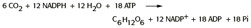

Photosynthesis Problem Set 2
Problem 3 Tutorial: Equation for dark reaction.
The equation for the dark reaction of photosynthesis in C-3 plants is as follows:

Which of the following statements about the dark reaction is true?
A. ribulose-1,5-bisphosphate carboxylase, or RUBISCO is the CO2-fixing enzyme for this process. B. the reactions occur in the chloroplast stroma. C. the ATP and NADPH required for this process are produced by the light reactions of photosynthesis. D. this process is the primary source of reduced, carbon-containing compounds for all living organisms. E. all of the statements are true.
Features of the equation for the dark reaction
RUBISCO is the CO2-fixing enzyme for this process. See the tutorial for problem #1 of problem set 2 of Photosynthesis.The reactions occur in the chloroplast stroma. See the tutorial for problem #1 of problem set 1 of photosynthesis. and the tutorial for problem #2 of problem set 2 of photosynthesis.
The ATP and NADPH required for this process are produced by the light reactions of photosynthesis. See the tutorial for problem #8 of problem set 1 of photosynthesis
Carbohydrate biosynthesis occurs via enzymes of the Calvin Cycle. See the tutorial for problem #2of problem set 2 of photosynthesis.
This process is the primary source of reduced, carbon-containing compounds for all living organisms.


University of Arizona
Wednesday, October 2, 1996
Contact the Development Team
http://biology.arizona.edu
All contents copyright © 1996. All rights reserved.